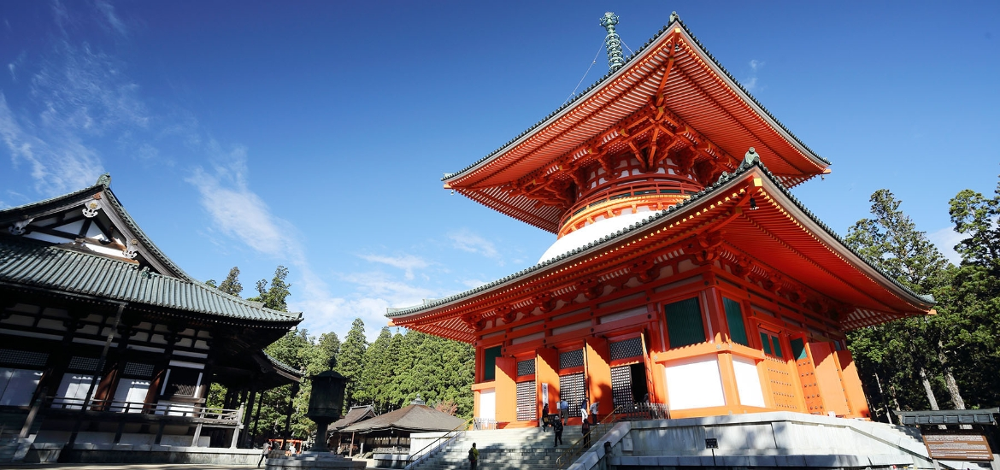

和歌山おすすめスポット5選
-
1.友ヶ島
おすすめポイント
友ヶ島は、和歌山市加太と淡路島のちょうど中間に位置する無人島群です。
「まるでアニメの世界」と言われる廃墟が点在しており、廃墟好きやアニメファンから厚い支持を得ています。
また、豊かな自然も魅力のひとつで、キャンプや釣りなどのアウトドアを楽しむことも。
和歌山市の加太港からフェリーが出ており、手軽にアクセスできる無人島として関西で人気の観光地となっています。 -
2.アドベンチャーワールド

おすすめポイント
アドベンチャーワールドは、和歌山県南紀白浜にある、動物園と水族館と遊園地が一体になったテーマパーク。
3種類のパークが同じ敷地内にあるところは、全国的にも珍しいため県内外から多くの観光客が訪れます。
動物の総数は約1400頭！ ジャイアントパンダやライオン、バンドウイルカなどの人気動物をはじめとし、140種類ものかわいい動物が暮らしています。
遊園地には、ジェットコースターや観覧車も併設されているため、何度行っても楽しめる施設です。 -
3.和歌山城
おすすめポイント
築城の名人・藤堂高虎が作り上げ、江戸時代には紀州55万5千石の城となり、徳川御三家のひとつとして長い歴史を刻んできました。
こんもりと緑茂る虎伏山（とらふすやま）に白亜の天守閣がそびえ、御三家の威容にふさわしい風格。
石垣には紀州特産の青石が多く使われており、時代によって異なる石垣の積み方が見られます。 -
4.ポルトヨーロッパ
おすすめポイント
アメリカの映画会社によるエンターテインメントのノウハウを生かしたテーマパーク。
中世の地中海の港街をモチーフに、石畳やレンガ造りなど、美しいヨーロッパの街並みが広がります。
落差22ｍの激流を滑り落ちる「ハイダイブ」や遊園地ゾーン「パークパシフィーク」などもあり、大人から子どもまで楽しめます。
NHK連続テレビ小説『カムカムエヴリバディ』のロケ地に使われたことでも話題です。 -
5.高野山
おすすめポイント
標高約900mの山上盆地に広がる高野山は、弘法大師・空海が真言密教の道場を開くにふさわしい地として選んだ聖地。
以来、僧侶たちの修行場であり、人々の信仰を集めています。
武将の真田昌幸・信繁（幸村）親子が蟄居（ちっきょ）させられた地としても有名です。
近年ではパワースポットとして多くの観光客が訪れています。